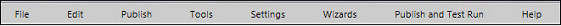

No
The Process Designer provides the interface to model workflow processes. Workflows can be modeled, designed, and deployed from this window. It opens when the Process Designer control is executed from a web form in the web application.
The Process Designer is an AJAX based ASP.NET server control that can be embedded in any web based product, ASP Engine, or web page. It is a browser based application that requires no plug-in or IDE. It provides a comprehensive set of standard activities, which can be easily dragged and dropped on a design mosaic and linked to design processes.
The Process Designer user interface has the following parts:
The following image shows the Process Designer window:
Menu bar
The following image shows the menu bar of the Process Designer window:

Note: To change the Menu in the Process Designer, edit the pdmenu.txt file under the Locales folder.
The menu bar has the following menus.
File
The File menu has the following options to perform various activities on the files in which workflow process designs are saved:
Edit
The Edit menu has the following options to perform various activities on the Workflow process design:
Publish:
A workflow is deployed and activated only if it is published.
Tools:
The Tools menu has the following options to export and import workflow definitions:
Settings:
The Settings menu has the following options to configure different process level settings for other AVEVA Work Tasks Controls:
Tool bar
The tool bar is located just below the menu bar at the top of the Process Designer window. It has the following tools:
Undo
The Undo tool can be used to undo the previous actions that were performed in the Process Designer.
Redo
The Redo tool can be used to repeat the previous actions that were performed in the Process Designer.
Delete
The Delete tool can be used to delete an activity from the workflow.
Copy
The Copy tool can be used to copy an activity in a workflow to paste it elsewhere.
Paste
The Paste tool can be used to paste a cut or copied activity in the workflow.
Activities Toolbox
The Activities Toolbox tool can be used to show or hide the Activities Toolbox (AVEVA Work Tasks activities), which has the list of activities.
Activity Properties
The Activity Properties tool can be used to show or hide the properties area for the selected activity.
Edit Text
The Edit Text tool can be used to edit the text corresponding to the selected element on the design mosaic. It could be an activity or a link.
Show Grid
The Show Grid tool can be used to show or hide the grid pattern on the design mosaic.
Search
The Search tool can be used to search for a specific value in the workflow. You can enter the value to be searched in the field and click the magnifying glass icon next to it to start the search.
Zoom
The Zoom tool can be used to zoom in or out on the workflow design in the design mosaic. You can do this by specifying the percentage of zoom using the Zoom Level drop-down in the window that opens. You can also use this image to navigate through the process diagram.
See Also: Using the Process Map Image for Navigation
This feature is browser dependent. FireFox is not supported.
Link
The Link tool can be used to create a new link between two activities. You can do this by specifying the two activities to be linked in the window that is displayed.
Help
The Help tool can be used to access help content for the Process Designer and its elements.
Activities
You can use the AVEVA Work Tasks activities area to access the different activities that can be used to design the workflow process in the Process Designer. There are several activities organized under different groups, which you can access from the drop-down list. These correspond to the standard workflow activities available with AVEVA Work Tasks.
Human Activities
When this option is selected from the drop-down list, it displays all the activities in this group. They can be used to enable human-workflow interaction. These activities include Approval, Check-List, Choice, Invoke Form, Resource Set, Information, Resource Set, Task, and Work.
Integration Activities
This option displays the activities that can be used to integrate workflows with external applications, scripts and databases. Activities include Create-Open-Office-Document, InvokeWebService, Script, File Operations, Change Workflow Status, and XML Action.
Engine Activities
This option displays the workflow-engine related activities. These include BlockingOutput, Database Activity, Decision, ForEach-Loop, For-Loop, Logger, Next-Loop, Resource Variable, Rule, Set Workflow output variable, Synchronize, Update Parent Variables, Update Variable, Workflow, and Xml Navigator.
Scheduler Activities
This option displays the activities that can be used to schedule the execution of other workflow activities. These include Control Custom Timer, Set Custom Timer, Scheduler, and Time Trigger.
Communication
This option displays the activities that can be used to enable communication from the workflows. These activities include Email, Notification, Send SMS, Wait for Email, and Wait for SMS.
BPMN Elements
This option displays the different BPMN elements available in AVEVA Work Tasks. These activities include Gateway Placeholder, Group Box, Intermediate Event Placeholder, Lane, Placeholder, and Pool.
List Activities
This option displays the activities that can be used to change the scope of the Xml List xml variable during workflow execution. These activities include List Navigator and Wait For Event.
Security
This option displays the activities that can be used for security. These include Cancel Approval Workflow and Security Instruction Handler.
Report Activities
You use the Report Generator activity to run a report template and save the report in the Reports list.
ArchestrA Events
Use the ArchestrA Wait for Event activity to wait for a number of events from ArchestrA Event Services platform for a particular time period, and then consume the events in a defined workflow. You can set the number of events and the time period in the properties of that activity. It can store the event context details in the specified XML variables.
Design Mosaic
You can create and edit workflows in the Design Mosaic. Initially, it displays only the icon for the Start activity. You can click and drop different activities from the list of activities to the Design Mosaic. This will display the icons corresponding to the selected activities, on the Design Mosaic. These activity icons can be lined to one another.
A splitter has been provided on the left side of the Design Mosaic. You can click this splitter to hide the Activities pane and enlarge the Design Mosaic in that direction. The following image shows the Process Designer with the splitter clicked to enlarge the design area:
Activity Properties
The Activity Properties pane at the right of the screen shows the property fields corresponding to the selected Activity. The following image shows the Activity Properties for the Logger activity: